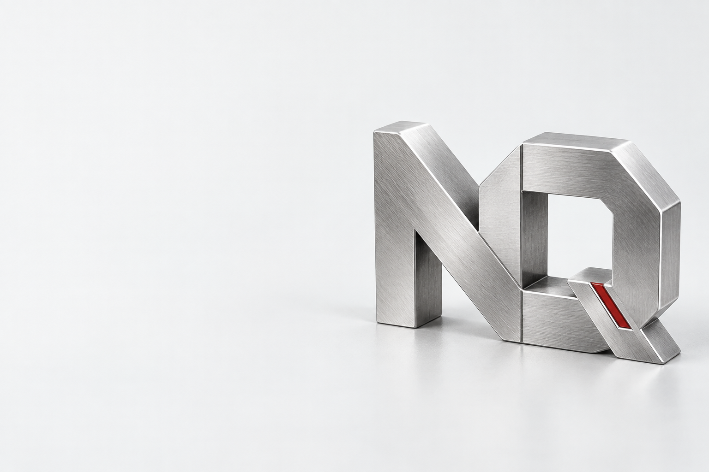
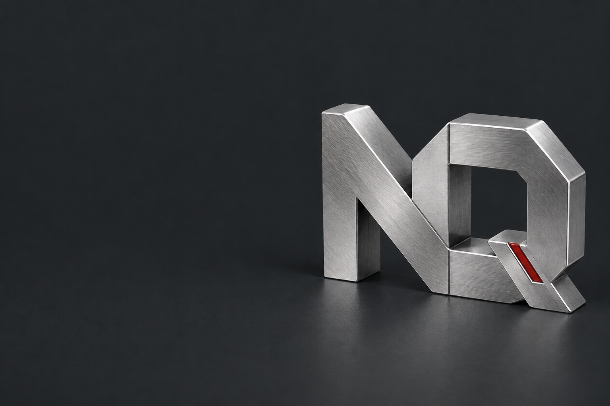

让引用，回到正确的文档。
干扰行混入率 ↓3 DOCS / 4 CASES
金融文档 RAG 评测
从检索到引用溯源，搭建可运行、可比较的金融文档评测流程。
3 份合成文档、4 个用例，top-k = 5。用例通过率为 50%，结果仅代表这一小型测试集。
- 代码
- 公开仓库
- 验证
- 单元测试 + 检索评测
- 下一步
- 扩充评测集


01 / SELECTED WORK
两个公开技术项目，一些持续生长的想法。
代码、结果，也记录尚未解决的问题。
从检索到引用溯源，搭建可运行、可比较的金融文档评测流程。
3 份合成文档、4 个用例，top-k = 5。用例通过率为 50%，结果仅代表这一小型测试集。
基于 Freqtrade 的策略代码、历史回测摘要与失败实验归档。
分窗口验证表尚未填写。历史摘要不等于独立复现或样本外验证，不作收益承诺。
LLM、Agent、评测与开源协作。将学习笔记和具体实验关联起来，独立仓库尚待建立。
代码之外，也用音乐记录生活。以「闫家欢」的名字，发布在网易云音乐。
加入更多发行人、名称歧义和无答案问题，冻结测试集后对照 embedding 检索。
NEXT 扩充并冻结评测集
补全分窗口回测结果、精确运行命令与失败说明。
NEXT Walk-forward 验证摘要
分别建立学习日志与开源贡献记录，关联代码、论文、issue 和 PR。
NEXT 第一篇实验笔记与外部贡献记录
04 / ABOUT ME
FINANCE → APPLIED AI
我的起点是传统金融。现在，正把研究问题的经验带进 AI 工程：从金融文档出发，学习构建、评测和改进系统。
这里留存项目的结果，也保留局限与未完成的部分。音乐、写作与生活记录，是这条路的另一面。
05 / GET IN TOUCH
AI 项目、金融技术场景，或一个值得一起研究的问题。